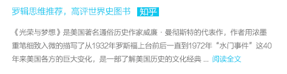

封面

内容简介
“蒋经国的传由外国人写，远比中国人写有意义。”
蒋经国之后，台湾历经李登辉、陈水扁、马英九等几代领导，然而每次民调显示，对台湾民主、经济、民生等各方面贡献最大的领导人，都是蒋经国。这位集中国宫廷、苏联共产主义、美国民主价值、台湾本土经验于一身的谜样人物，
蒋经国与邓小平在莫斯科同学少年，一心服膺共产主义，归国后分道扬镳；数十年后，隔着海峡，一个推行改革开放，一个力促“十大建设”，一个建立现代化强国，一个成为“亚洲四小龙”，是必然还是巧合？为什么自章亚若死后，蒋经国终其一生不见儿子章孝严、章孝慈？为什么两位私生子却成了蒋家第三代中最优秀的继承者？为什么蒋家第四代成了悬崖边的贵 族，天生逆反政治？
他曾是威权政治的关键人物，却也是台湾民主与现代化推手。他极富远见抓住机遇，力排众议，推行“十大建设“...
(展开全部)
推荐理由
· 有哪些经典值得一读再读的名人传记
· 何帆：2010年，我的悦读书目
· 北大【台湾政治概论】书单
· 浪花淘尽英雄之民国列传
所谓历史，是要用自己的眼睛看的
· 深圳读书月 年度十大好书 入围书目 50本
· 历史的沉思与细节
· 名人的传记以及回忆录
· 民国军人传忆述评
历史与政治要读的书
兵家有言：“能战方能和”。所谓和谈，不过是势均力敌者之间无奈地选择。抗战胜利后看毛的固北放南的做法，胃口不过划江而治；蒋却低估对手，要一统天下。到了“三大战役”之后，二者意愿正好相反。如无美国帮助，早就没有今天的台湾问题了。如果中共在50年代彻底统一中国，我想现在的中国史学家们同样可以和美国人回忆南北战争一样客观并抱有同情心，公正地评价那些站在不同阵营但却都怀着为建设一个强大的新中国这一信念而战斗的将士们。此外，想看这方面的信史无异于缘木求鱼，读者只能在大路货的字里行间管中窥豹了...更多
历史是另一个平行空间正在发生的事情。 也许谁都无法看清历史的真相，但至少它不应该是教科书上写的样子。 没办法成为史料考据党，只想看得稍微多一些。 毕竟，判断必须基于事实。
推荐书单
· 如何理解当代中国
· 历史与政治要读的书
名人传记及回忆录
要了解这个怒气冲冲的人世间，要和这个世间和解，无论如何都要爱这个世间，爱命运，爱世界。
收录名人多为文学、哲学、政治、艺术界已逝巨擘，众口难调，故所选多根据lz个人喜好取向，难免纰漏多多，欢迎大家补充推荐。另，各人传记和自传尽量分别收录最好版本各一，若发现有更好版本，则删除以前所收录的。
精彩评语
对面描叙台湾49年后来的日子不是很详细，没深入写普通人的生活是怎么改变的。不过还行。
生子当如孙仲谋，生子当如蒋经国。

写得非常之好，展现了一个真实的蒋经国，一个改变了台湾的甚至是中国的蒋经国。
1、豆列title（没有摘要的豆列），若能拿到书单对应的几本书，可以跳转到搜索结果页，Q= 值得一读再读的名人传记
2、豆列title+摘要，若能拿到书单对应的几本书，同理
3、豆列里针对某本书的短评
接下来应该读什么...
左翼青年成长启示录。
点击加载更多
点击加载更多
4、推荐相关书籍
台湾国父，无出其右。
点击加载更多
评语：有哪些经典值得一读再读的名人传记
评语：有哪些经典值得一读再读的名人传记
评语：有哪些经典值得一读再读的名人传记
评语：有哪些经典值得一读再读的名人传记
评语：有哪些经典值得一读再读的名人传记